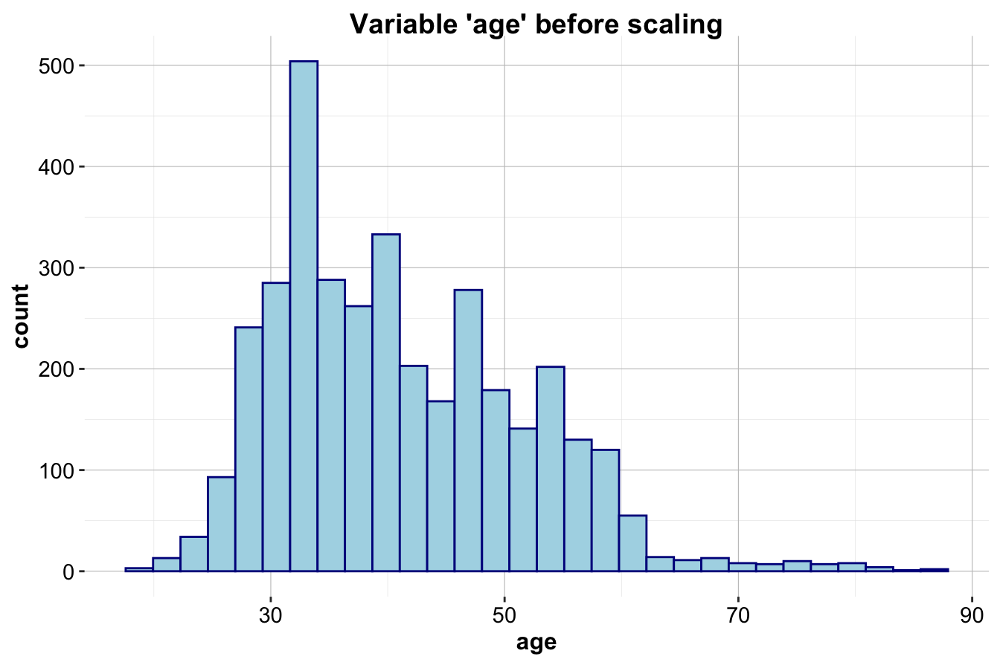
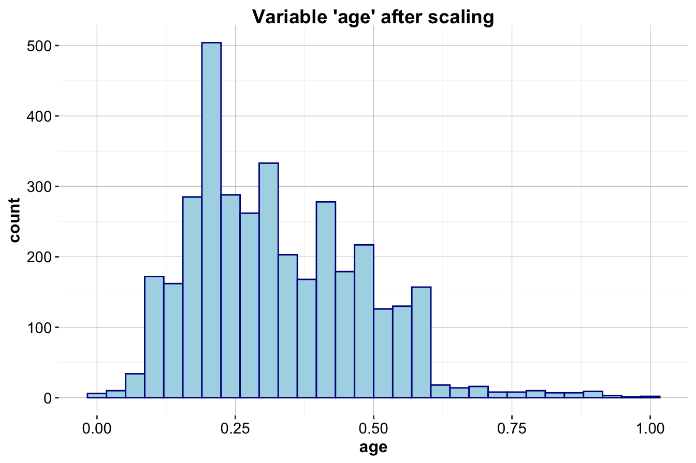

12 Neural Networks: The Building Blocks of Artificial Intelligence
For centuries, humans have been captivated by the idea of creating machines that can think and learn like us. Philosophers, inventors, and storytellers have explored this vision, from the mechanical automata of ancient Greece to the artificial beings imagined in science fiction. Early inventors like Hero of Alexandria designed self-operating machines, and myths of artificial life—such as the golem or automatons—reflected humanity’s enduring fascination with intelligent systems. What was once the realm of imagination has now become reality in the form of Artificial Intelligence (AI), a transformative force reshaping industries, societies, and daily life.
AI is no longer a futuristic concept—it powers everything from recommendation systems and fraud detection to autonomous vehicles and generative AI (GenAI) models capable of producing text, images, and music. These advancements have been fueled by exponential growth in computational power, the availability of vast datasets, and breakthroughs in machine learning algorithms. At the heart of this revolution lies a class of models known as neural networks, the driving force behind deep learning.
Neural networks are computational models inspired by the structure and function of the human brain. Just as biological neurons connect to form intricate networks that process information, artificial neural networks consist of layers of interconnected nodes that learn from data. This design enables them to recognize patterns, extract meaningful insights, and make predictions, making them particularly suited for problems involving complex, high-dimensional, and unstructured data—such as images, speech, and natural language. Unlike traditional machine learning models, which rely on handcrafted features, neural networks automatically discover representations in data, often outperforming classical approaches.
While deep learning—powered by advanced neural architectures—has made groundbreaking strides in areas like computer vision and language modeling, its foundation rests on simpler architectures. In this chapter, we focus on feed-forward neural networks, also known as multilayer perceptrons (MLPs). These fundamental models serve as the building blocks for more sophisticated deep learning systems.
Why neural networks are powerful
Neural networks excel in tackling complex and nonlinear problems, making them indispensable in modern AI applications. Their strengths stem from three key capabilities:
Pattern recognition in complex data: Neural networks are exceptionally effective at identifying patterns in unstructured data, such as detecting objects in images, recognizing speech, and generating human-like text. These tasks often pose significant challenges for traditional algorithms.
Robustness to noise: Due to their dense connectivity and adaptive learning, neural networks can extract meaningful information even from noisy or incomplete datasets, filtering out irrelevant variations.
Scalability and adaptability: Neural networks can handle massive datasets and model highly nonlinear relationships by adjusting their architecture—adding layers and neurons to capture increasing complexity.
Despite these advantages, neural networks come with challenges. Unlike interpretable models such as decision trees, they are often seen as “black boxes” because their decision-making process is distributed across many parameters, making it difficult to explain individual predictions. Additionally, training neural networks requires significant computational power, often necessitating specialized hardware like GPUs or TPUs to process large volumes of data efficiently.
The power of neural networks lies in their ability to emulate biological learning. Just as neurons in the brain collaborate to recognize patterns, artificial neurons in a network combine their outputs to solve problems that traditional algorithms struggle with. This ability to adaptively model nonlinear relationships has placed neural networks at the forefront of both research and real-world applications.
What’s ahead
In this chapter, we will explore the key principles of neural networks and their transformative applications through the following topics:
- Biological inspiration: How the structure and function of the human brain inspired artificial neural networks.
- Core algorithmic principles: The fundamental mechanics of neural networks, including layers, nodes, and weights.
- Activation functions: The role of non-linearity in enabling neural networks to learn complex patterns.
- Training neural networks: The iterative optimization process used to adjust neural network parameters.
- Case study: Applying neural networks to predict customer subscription behavior using the bank marketing dataset.
Neural networks have revolutionized computing, enabling machines to tackle problems once considered unsolvable. From driving autonomous vehicles to powering medical diagnostics, these models are shaping the future of AI. To understand how they function, we begin by exploring their biological origins and the inspiration drawn from the human brain.
12.1 Neural networks: inspired by biological neurons
The foundation of neural networks is deeply rooted in the structure and function of biological neurons, which form the basis of learning and decision-making in animal brains. While individual neurons are relatively simple in structure, their true power lies in their dense and intricate connectivity. These networks of interconnected neurons enable the brain to perform highly complex tasks, such as pattern recognition, classification, reasoning, and decision-making. For example, the human brain contains approximately \(10^{11}\) neurons, with each neuron forming connections to an average of 10,000 others. This creates an astonishing \(10^{15}\) synaptic connections—a vast, dynamic network capable of extraordinary learning and adaptation.
Artificial neural networks (ANNs) are computational models inspired by these biological structures. While they do not replicate the full complexity of the brain, they abstract key principles of learning through interconnected units. By leveraging dense networks of artificial neurons, ANNs can model nonlinear and dynamic processes, enabling them to tackle complex problems in domains such as image recognition, speech processing, and decision-making. They are particularly adept at uncovering patterns and relationships in data, even in cases where traditional algorithms struggle.
As shown in Figure 12.1, a biological neuron is designed to process and transmit information. Dendrites act as input channels, collecting signals from other neurons. These signals are processed and integrated in the cell body, where a decision is made: if the combined input surpasses a certain threshold, the neuron “fires” and sends an output signal through its axon to other connected neurons. This nonlinear behavior—firing only when a certain input threshold is exceeded—plays a critical role in the brain’s ability to process information efficiently.
Similarly, an artificial neuron (illustrated in Figure 12.2) emulates this process using a mathematical model. It receives inputs (\(x_i\)) from either other artificial neurons or directly from a dataset. These inputs are combined using a weighted summation (\(\sum w_i x_i\)), where the weights (\(w_i\)) represent the strength of each input’s influence. The combined signal is then passed through an activation function (\(f(.)\)) to introduce non-linearity, determining the final output (\(\hat{y}\)). This output is either transmitted to other artificial neurons or used as the final result of the model. The activation function is crucial, as it enables neural networks to learn and model complex, nonlinear relationships in data.
Figure 12.1: Visualization of a biological neuron, which processes input signals through dendrites and sends outputs through the axon.
Figure 12.2: Illustration of an artificial neuron, designed to emulate the structure and function of a biological neuron in a simplified way.
One of the key advantages of artificial neural networks is their ability to generalize from data, even when faced with noise or incomplete information. Unlike traditional algorithms that rely on explicit rule-based decision-making, neural networks distribute learning across many interconnected neurons and weighted connections, allowing them to adapt and identify patterns even when individual data points are imperfect. This distributed learning process enables them to handle complex, high-dimensional data more effectively than many conventional models.
However, this flexibility comes at a cost. Neural networks often require large amounts of data and computational power to train effectively, and their decision-making process is less interpretable than traditional models such as decision trees. Unlike rule-based models that provide clear decision paths, neural networks embed their learned knowledge within millions of parameters, making it challenging to understand precisely how a prediction is made.
In the following sections, we will delve deeper into the mechanics of neural networks, starting with their core structure and the algorithms that enable them to learn from data.
12.2 How neural networks work
Neural networks extend traditional linear models by incorporating multiple layers of processing to capture complex relationships in data. At their core, they build upon the fundamental concepts of linear regression. A linear regression model makes predictions using the following equation:
\[ \hat{y} = b_0 + b_1 x_1 + b_2 x_2 + \dots + b_p x_p \]
where \(p\) represents the number of predictors, \(b_0\) is the intercept, and \(b_1\) to \(b_p\) are the learned coefficients. In this setup, \(\hat{y}\) is a weighted sum of the input features (\(x_1\) to \(x_p\)), where the weights (\(b_1\) to \(b_p\)) determine the relative influence of each feature on the prediction. This simple linear relationship can be visualized in Figure 12.3, where input features and the prediction are represented as nodes, with the coefficients acting as connecting weights.
Figure 12.3: A graphical representation of a regression model: input features and predictions are shown as nodes, with the coefficients represented as connections between the nodes.
While linear models are effective for capturing direct relationships between inputs and outputs, they struggle to represent more complex patterns, such as interactions between variables or hierarchical structures in data. Neural networks address this limitation by introducing multiple layers of artificial neurons between the input and output, allowing them to model intricate, nonlinear relationships. This structure is illustrated in Figure 12.4.
The architecture of a neural network consists of the following key components:
The input layer serves as the entry point for the data. Each node in this layer corresponds to an input feature, such as age, income, or pixel intensity in an image.
The hidden layers process the data by transforming inputs through multiple interconnected nodes (artificial neurons). Each hidden layer captures increasingly abstract features, allowing the network to learn complex patterns. Every neuron in a hidden layer is connected to neurons in both the preceding and succeeding layers, with each connection assigned a weight.
The output layer produces the final prediction. In classification tasks, it typically represents the probability of a given class, while in regression tasks, it outputs a continuous numerical value.
Figure 12.4: Visualization of a multilayer neural network model with two hidden layers.
In Figure 12.4, the input layer passes the features into the network, where each hidden layer applies transformations before passing the processed information forward. The output layer aggregates this information to generate the final prediction. Each connection in the network is assigned a weight (\(w_i\)), which determines the strength of influence one neuron has on another. These weights are adjusted during training to optimize the model’s accuracy.
The behavior of an artificial neuron can be mathematically expressed as:
\[ \hat{y} = f\left( \sum_{i=1}^{p} w_i x_i + b \right) \]
where:
- \(x_i\) represents the input features,
- \(w_i\) represents the corresponding weights,
- \(b\) is a bias term that helps shift the activation threshold,
- \(\sum\) represents the summation of the weighted inputs,
- \(f(.)\) is the activation function, and
- \(\hat{y}\) is the output of the neuron.
A crucial component of this process is the activation function, which introduces non-linearity into the model. Without it, the neural network would be equivalent to a linear model, regardless of the number of layers. By applying a non-linear transformation to the combined input signals, activation functions allow neural networks to approximate complex relationships in data.
Key characteristics of neural networks
Despite the diversity of neural network architectures, all neural networks share three fundamental characteristics that define their functionality:
Activation functions The activation function transforms a neuron’s net input into an output signal that is passed to the next layer. Activation functions introduce non-linearity, enabling the network to learn complex patterns. Common choices include the sigmoid function, ReLU (rectified linear unit), and hyperbolic tangent (tanh).
Network architecture The structure of a neural network defines its computational capacity. This includes the number of layers, the number of neurons in each layer, and how neurons are connected. For example, deep neural networks contain many hidden layers, enabling them to learn hierarchical and abstract representations of data.
Training algorithm Training a neural network involves adjusting the weights (\(w_i\)) and biases (\(b\)) in the model to minimize prediction errors. This is achieved by defining a loss function, which quantifies how far the network’s predictions deviate from the true values. Optimization algorithms such as gradient descent iteratively update the weights to reduce this error, allowing the network to improve over time.
In the following sections, we will explore these components in greater detail, beginning with activation functions and their role in enabling neural networks to model complex, non-linear relationships.
12.3 Activation functions
The activation function is a fundamental component of a neural network, determining how an artificial neuron processes incoming signals and passes information forward. Much like biological neurons, which integrate input signals from dendrites and decide whether to “fire,” artificial neurons use activation functions to introduce non-linearity, allowing neural networks to model complex relationships that linear models cannot capture. Without activation functions, even deep neural networks would behave like simple linear models, limiting their ability to learn hierarchical and abstract features from data.
In mathematical terms, an artificial neuron computes a weighted sum of its inputs and applies an activation function \(f(x)\) to determine its output:
\[ \hat{y} = f\left( \sum_{i=1}^{p} w_i x_i + b \right) \]
where \(x_i\) represents the input features, \(w_i\) are the corresponding weights, \(b\) is a bias term, and \(f(x)\) is the activation function. The choice of activation function significantly impacts a network’s ability to learn and generalize.
The threshold activation function
Early neural network models used a simple threshold activation function, mimicking the binary nature of biological neurons. The threshold function activates only when the input exceeds a certain value, producing an output of either 0 or 1. It is defined as:
\[ f(x) = \begin{cases} 1 & \text{if } x \geq 0 \\ 0 & \text{if } x < 0 \end{cases} \]
This step-like behavior is visualized in Figure 12.5. The function outputs 1 when the input is at least zero and 0 otherwise, making it useful for basic classification tasks.
Figure 12.5: Visualization of the threshold activation function (unit step).
While biologically intuitive, the threshold function has major drawbacks. It cannot model nuanced relationships between inputs and outputs, as it only provides binary decisions. More importantly, it is not differentiable, preventing its use in gradient-based optimization methods such as backpropagation. For these reasons, it has been largely replaced by continuous activation functions.
The sigmoid activation function
A widely used alternative is the sigmoid activation function, also known as the logistic function. The sigmoid function maps any real-valued input to a smooth output between 0 and 1, making it suitable for probability-based interpretations. It is defined as:
\[ f(x) = \frac{1}{1 + e^{-x}} \]
where \(e\) is the base of the natural logarithm (approximately 2.72). The sigmoid function has an S-shaped curve, as shown in Figure 12.6, and provides a differentiable alternative to the threshold function.
Figure 12.6: Visualization of the sigmoid activation function.
Although sigmoid activation is useful, it suffers from the vanishing gradient problem. When inputs are very large or very small, the function saturates, producing values close to 0 or 1. In these regions, the derivative is near zero, slowing down the learning process in deep networks. As a result, alternative activation functions are often preferred for hidden layers.
Other common activation functions
Several activation functions have been developed to address the limitations of the sigmoid function. Figure 12.7 compares some of the most commonly used activation functions.
-
Hyperbolic Tangent (tanh): Similar to the sigmoid function but with an output range of \((-1, 1)\). This symmetry around zero often leads to faster learning in practice.
-
ReLU (Rectified Linear Unit): Defined as \(f(x) = \max(0, x)\), ReLU is the most widely used activation function in deep neural networks due to its computational efficiency and ability to mitigate the vanishing gradient problem.
- Leaky ReLU: A variation of ReLU that allows small negative values instead of zero for negative inputs, reducing the problem of inactive neurons.
Figure 12.7: Comparison of common activation functions: sigmoid, tanh, and ReLU.
Choosing the right activation function
The choice of activation function depends on the network architecture and the specific learning task:
- Sigmoid is commonly used in the output layer for binary classification problems, where the output represents a probability.
-
Tanh is often used in hidden layers because it is zero-centered, which can lead to faster convergence during training.
-
ReLU is the default choice for hidden layers in deep networks due to its efficiency and ability to mitigate the vanishing gradient problem.
-
Leaky ReLU is useful in cases where ReLU may cause neurons to become inactive, as it allows small negative outputs.
- Linear activation is typically used in the final layer of regression models, where the output is a continuous value.
Activation functions such as sigmoid and tanh can suffer from saturation, where input values far from zero result in near-constant outputs. This leads to vanishing gradients, slowing down learning. One strategy to mitigate this issue is to preprocess input data through normalization or standardization, ensuring values remain within an optimal range.
ReLU and its variants have become the preferred choice for hidden layers in deep learning due to their computational efficiency and ability to propagate gradients effectively. However, selecting the right activation function depends on the specific problem and empirical evaluation.
12.4 Network architecture
The ability of a neural network to learn and make predictions is fundamentally tied to its architecture, or topology. This refers to the arrangement of neurons and the connections between them, which define how data flows through the network. While neural networks can take on various forms, their architecture is primarily characterized by three factors:
- The number of layers in the network,
- The number of neurons (or nodes) in each layer, and
- The connectivity between neurons across layers.
The architecture of a neural network determines its capacity to model complex relationships. Larger networks with more layers and neurons can capture intricate patterns and decision boundaries. However, the effectiveness of a network is not solely determined by its size but also by how its components are organized and interconnected.
To understand network architecture, consider a simple example illustrated in Figure 12.3. This basic network consists of:
- Input nodes, which receive raw feature values from the dataset. Each input node corresponds to one feature and passes its value to the network.
- Output nodes, which provide the network’s final prediction, denoted as \(p\).
In this single-layer network, input nodes are directly connected to the output node through a set of weights (\(w_1, w_2, \dots, w_p\)), representing the influence of each input feature on the prediction. This simple architecture works well for basic classification or regression tasks but struggles with capturing complex patterns.
To address this limitation, additional layers can be introduced, as shown in Figure 12.4. These intermediate layers, known as hidden layers, allow the network to model nonlinear relationships and discover hierarchical structures in data.
A multilayer network typically consists of three types of layers:
- The input layer, where raw features enter the network.
- One or more hidden layers, which extract and refine patterns.
- The output layer, which combines the processed information to generate the network’s final prediction.
In a fully connected network, each neuron in one layer transmits information to all neurons in the next layer, with an associated weight assigned to each connection. These weights determine how strongly neurons influence each other and are adjusted during training to optimize performance.
The introduction of hidden layers enables neural networks to process input data hierarchically. Early layers may learn basic features, such as edges in an image or simple word patterns in text, while deeper layers capture more abstract representations, such as object shapes or semantic meaning. Networks with multiple hidden layers are referred to as deep neural networks (DNNs), and training such models is known as deep learning. This approach has driven advancements in computer vision, speech recognition, and natural language processing.
The number of input and output nodes in a network is determined by the problem at hand.
- The input nodes match the number of features in the dataset. For example, a dataset with 20 features would have 20 input nodes.
- The output nodes depend on the task. In regression problems, there is typically one output node representing a continuous value. In classification tasks, the number of output nodes corresponds to the number of classes.
The number of hidden nodes in each layer is not predefined and must be determined based on the complexity of the problem. A larger number of hidden nodes increases the network’s ability to capture intricate patterns but also raises the risk of overfitting—where the model performs well on training data but poorly on unseen data. Overly large networks can also be computationally expensive and slow to train.
Balancing network complexity and efficiency is essential for achieving optimal performance. This is often guided by the principle of Occam’s Razor, which suggests that the simplest model that adequately explains the data is usually preferable. In practice, the optimal network architecture is determined through experimentation, incorporating techniques such as cross-validation and regularization methods like dropout and weight decay to mitigate overfitting.
While this section focuses on fully connected networks, specialized architectures such as convolutional neural networks (CNNs) for image processing and recurrent neural networks (RNNs) for sequential data provide additional flexibility for specific tasks. These architectures build upon the principles of deep learning and have enabled major breakthroughs in artificial intelligence.
In summary, the architecture of a neural network defines its capacity to solve problems. From simple single-layer networks to sophisticated deep neural networks, these architectures offer the flexibility to model a wide variety of tasks, ranging from basic regression to highly complex applications like autonomous driving and medical diagnosis. In the next section, we will explore how these architectures are trained to optimize their performance and learn from data.
12.5 How neural networks learn
A neural network, like an untrained system, starts with no knowledge of the task at hand. Through exposure to data, it gradually learns by adjusting internal connections, a process akin to how humans refine their understanding through experience. These connections, represented as weights, are updated as the network processes data, enabling it to discover patterns and relationships over time. Just as a child learns to recognize objects by repeatedly encountering them, a neural network improves its predictions through iterative refinements based on the data it encounters.
Training a neural network is a computationally intensive process that involves adjusting the weights connecting neurons. While neural networks have been studied since the mid-20th century, their real-world application remained limited until the 1980s, when a major breakthrough—the backpropagation algorithm—made it feasible to train multilayer networks efficiently. Backpropagation revolutionized neural network training by enabling networks to systematically learn from errors, making deep learning practical for real-world applications. Despite being computationally demanding compared to simpler machine learning algorithms, backpropagation remains the foundation of modern neural network training, powering advancements in fields such as computer vision and natural language processing.
At its core, backpropagation refines the network’s weights through an iterative learning process consisting of two main phases: the forward phase and the backward phase. Each iteration, known as an epoch, begins with randomly initialized weights, as the network starts without prior knowledge. Over successive epochs, the network continuously updates its weights to minimize prediction errors.
In the forward phase, input data is passed through the network, layer by layer, from the input layer through any hidden layers before reaching the output layer. Each neuron processes its input by applying its associated weights, summing the weighted inputs, and transforming the result using an activation function. The output layer produces the network’s final prediction, which is then compared to the actual target value from the training data. This comparison generates an error signal, quantifying how far the network’s prediction deviates from the expected outcome.
In the backward phase, this error signal is propagated backward through the network to update the weights. The objective is to adjust the weights in a way that reduces the prediction error in subsequent forward passes. This process relies on gradient descent, an optimization technique that determines the optimal direction and magnitude of weight changes to minimize error. The gradient represents the rate of change of the error with respect to each weight, acting as a guide to indicate how adjustments should be made. This is analogous to descending a mountain: by always moving in the direction of the steepest downward slope, the network iteratively approaches the point of minimum error.
The magnitude of weight adjustments is controlled by a parameter known as the learning rate. A high learning rate enables the network to make large updates, which may speed up training but risks overshooting the optimal solution. Conversely, a low learning rate results in more gradual updates, ensuring precise refinements but potentially slowing convergence. Selecting an appropriate learning rate is crucial for efficient training, and modern optimization techniques, such as adaptive learning rate methods, help fine-tune this process dynamically.
To successfully apply gradient descent and backpropagation, the network’s activation functions must be differentiable. This requirement ensures that the gradients can be computed efficiently, allowing meaningful weight updates. As a result, smooth, non-linear activation functions such as the sigmoid, hyperbolic tangent (tanh), and ReLU (Rectified Linear Unit) are widely used in neural networks. In modern deep learning, variations of gradient descent, such as stochastic gradient descent (SGD) and Adam, have been developed to improve efficiency and stability, particularly for large-scale datasets.
Through repeated cycles of forward and backward propagation, the network refines its weights, reducing overall error and improving its ability to generalize to unseen data. While this process may seem computationally complex, modern machine learning frameworks such as TensorFlow and PyTorch automate backpropagation, gradient descent, and weight updates, allowing practitioners to focus on designing the network architecture and preparing the data.
The development of backpropagation marked a turning point in neural network research, enabling these models to solve real-world problems with remarkable accuracy. Although training remains computationally demanding, advancements in hardware—such as GPUs and TPUs—have significantly accelerated the process, making it feasible to train large and complex networks efficiently. With a clear understanding of how neural networks learn, we now turn to their practical applications, examining how they uncover patterns in data to make accurate predictions in real-world settings.
12.6 Case study: bank marketing
How can a financial institution improve the effectiveness of its future marketing campaigns? To make a data-driven decision, we analyze the bank’s previous marketing campaign to identify patterns that can inform future strategies. In this case study, we apply a neural network to predict whether a customer will subscribe to a term deposit based on demographic and campaign-related features. By analyzing this dataset, we aim to uncover key factors that influence customer subscription behavior, helping the bank design more effective marketing strategies.
For this analysis, we use the bank dataset, a well-known benchmark dataset sourced from the UC Irvine Machine Learning Repository and available in the liver package. This dataset was used by Sérgio Moro, Paulo Cortez, and Paulo Rita12 for a data-driven approach to predicting the success of bank telemarketing campaigns. The goal is to build a classification model that predicts which customers are likely to subscribe to a term deposit.
Problem understanding
Banks typically use two main strategies to market their financial products:
-
Mass campaigns: These campaigns reach a broad audience with minimal targeting, often resulting in low response rates (typically below 1%).
- Directed marketing: This approach targets customers more likely to be interested in the product, improving conversion rates but raising potential privacy concerns.
In this case study, we aim to enhance the effectiveness of directed marketing by analyzing past campaign data to identify patterns in customer behavior. By predicting which customers are more likely to subscribe to a term deposit, the bank can optimize marketing efforts, reduce costs, and minimize intrusive communications while maintaining success rates.
A term deposit is a fixed-term savings product that offers customers higher interest rates than standard savings accounts. Banks use term deposits to secure long-term funds and strengthen their financial reserves. More details on term deposits can be found here.
Overview of the dataset
The bank dataset includes information on direct phone-based marketing campaigns conducted by a financial institution. Customers were contacted multiple times within the same campaign. The objective of this dataset is to predict whether a customer will subscribe to a term deposit (deposit = "yes" or "no").
We load the bank dataset directly into R and examine its structure using the following commands:
library(liver) # Load the liver package
data(bank) # Load the bank marketing dataset
str(bank)
'data.frame': 4521 obs. of 17 variables:
$ age : int 30 33 35 30 59 35 36 39 41 43 ...
$ job : Factor w/ 12 levels "admin.","blue-collar",..: 11 8 5 5 2 5 7 10 3 8 ...
$ marital : Factor w/ 3 levels "divorced","married",..: 2 2 3 2 2 3 2 2 2 2 ...
$ education: Factor w/ 4 levels "primary","secondary",..: 1 2 3 3 2 3 3 2 3 1 ...
$ default : Factor w/ 2 levels "no","yes": 1 1 1 1 1 1 1 1 1 1 ...
$ balance : int 1787 4789 1350 1476 0 747 307 147 221 -88 ...
$ housing : Factor w/ 2 levels "no","yes": 1 2 2 2 2 1 2 2 2 2 ...
$ loan : Factor w/ 2 levels "no","yes": 1 2 1 2 1 1 1 1 1 2 ...
$ contact : Factor w/ 3 levels "cellular","telephone",..: 1 1 1 3 3 1 1 1 3 1 ...
$ day : int 19 11 16 3 5 23 14 6 14 17 ...
$ month : Factor w/ 12 levels "apr","aug","dec",..: 11 9 1 7 9 4 9 9 9 1 ...
$ duration : int 79 220 185 199 226 141 341 151 57 313 ...
$ campaign : int 1 1 1 4 1 2 1 2 2 1 ...
$ pdays : int -1 339 330 -1 -1 176 330 -1 -1 147 ...
$ previous : int 0 4 1 0 0 3 2 0 0 2 ...
$ poutcome : Factor w/ 4 levels "failure","other",..: 4 1 1 4 4 1 2 4 4 1 ...
$ deposit : Factor w/ 2 levels "no","yes": 1 1 1 1 1 1 1 1 1 1 ...The dataset contains 4521 observations and 17 variables. The target variable, deposit, is binary, with two categories: yes and no. Below is a summary of all features:
Demographic features:
- age: Age of the customer (numeric).
- job: Type of job (e.g., “admin.”, “blue-collar”, “management”).
- marital: Marital status (e.g., “married”, “single”).
- education: Level of education (e.g., “secondary”, “tertiary”).
- default: Whether the customer has credit in default (binary: “yes”, “no”).
- balance: Average yearly balance in euros (numeric).
Loan information:
- housing: Whether the customer has a housing loan (binary).
- loan: Whether the customer has a personal loan (binary).
Campaign details:
- contact: Type of communication used (e.g., “telephone”, “cellular”).
- day: Last contact day of the month (numeric).
- month: Last contact month of the year (categorical: “jan”, “feb”, “mar”, …, “nov”, “dec”).
- duration: Last contact duration in seconds (numeric).
- campaign: Total number of contacts made with the customer during the campaign (numeric).
- pdays: Days since the customer was last contacted (numeric).
- previous: Number of contacts before the current campaign (numeric).
- poutcome: Outcome of the previous campaign (e.g., “success”, “failure”).
Target variable:
- deposit: Indicates whether the customer subscribed to a term deposit (binary: “yes”, “no”).
This dataset contains a diverse set of features related to customer demographics and past interactions, making it well-suited for building predictive models to improve marketing strategies.
With the dataset ready, we now proceed to data preparation and model training using a neural network to predict customer subscription behavior.
Preparing data for modeling
Before training the neural network model, we need to prepare the dataset by splitting it into training and test sets. This ensures that we can assess how well the model generalizes to new, unseen data. We use an 80/20 split, allocating 80% of the data for training and 20% for testing. To maintain consistency with previous chapters, we apply the partition() function from the liver package:
set.seed(500)
data_sets = partition(data = bank, ratio = c(0.8, 0.2))
train_set = data_sets$part1
test_set = data_sets$part2
test_labels = test_set$depositThe set.seed() function ensures reproducibility by fixing the random seed. We use train_set to train the classification models, while test_set serves as unseen data for evaluation. The test_labels vector contains the true class labels for test_set, which we will compare against the model’s predictions.
To validate this split, we compare the proportion of deposit = "yes" in the training and test sets using a two-sample Z-test:
x1 = sum(train_set$deposit == "yes")
x2 = sum(test_set$deposit == "yes")
n1 = nrow(train_set)
n2 = nrow(test_set)
prop.test(x = c(x1, x2), n = c(n1, n2))
2-sample test for equality of proportions with continuity correction
data: c(x1, x2) out of c(n1, n2)
X-squared = 0.0014152, df = 1, p-value = 0.97
alternative hypothesis: two.sided
95 percent confidence interval:
-0.02516048 0.02288448
sample estimates:
prop 1 prop 2
0.1150124 0.1161504The test confirms that the proportions in both subsets are statistically similar (p-value > 0.05), validating our split. This ensures that the training and test sets are representative of the original dataset, enabling us to evaluate the model’s performance effectively.
Our objective is to classify customers as either likely (deposit = "yes") or unlikely (deposit = "no") to subscribe to a term deposit, based on the following predictors:
age, default, balance, housing, loan, duration, campaign, pdays, and previous.
One-hot encoding
Since neural networks require numerical inputs, categorical variables must be converted into numeric representations. One-hot encoding achieves this by creating separate binary variables for each category. We apply the one.hot() function from the liver package to transform categorical features into a numerical format suitable for a neural network:
categorical_vars = c("default", "housing", "loan")
train_onehot = one.hot(train_set, cols = categorical_vars)
test_onehot = one.hot(test_set, cols = categorical_vars)
str(test_onehot)
'data.frame': 904 obs. of 20 variables:
$ age : int 43 40 56 25 31 32 23 36 32 32 ...
$ job : Factor w/ 12 levels "admin.","blue-collar",..: 1 5 10 2 10 2 8 5 10 3 ...
$ marital : Factor w/ 3 levels "divorced","married",..: 2 2 2 3 2 2 3 3 3 3 ...
$ education : Factor w/ 4 levels "primary","secondary",..: 2 3 2 1 2 2 3 3 3 1 ...
$ default_no : int 1 1 1 1 1 1 1 1 1 0 ...
$ default_yes: int 0 0 0 0 0 0 0 0 0 1 ...
$ balance : int 264 194 4073 -221 171 2089 363 553 2204 -849 ...
$ housing_no : int 0 1 1 0 1 0 0 1 0 0 ...
$ housing_yes: int 1 0 0 1 0 1 1 0 1 1 ...
$ loan_no : int 1 0 1 1 1 1 1 1 1 0 ...
$ loan_yes : int 0 1 0 0 0 0 0 0 0 1 ...
$ contact : Factor w/ 3 levels "cellular","telephone",..: 1 1 1 3 1 1 3 1 1 1 ...
$ day : int 17 29 27 23 27 14 30 11 21 4 ...
$ month : Factor w/ 12 levels "apr","aug","dec",..: 1 2 2 9 2 10 9 2 10 4 ...
$ duration : int 113 189 239 250 81 132 16 106 11 204 ...
$ campaign : int 2 2 5 1 3 1 18 2 4 1 ...
$ pdays : int -1 -1 -1 -1 -1 -1 -1 -1 -1 -1 ...
$ previous : int 0 0 0 0 0 0 0 0 0 0 ...
$ poutcome : Factor w/ 4 levels "failure","other",..: 4 4 4 4 4 4 4 4 4 4 ...
$ deposit : Factor w/ 2 levels "no","yes": 1 1 1 1 1 2 1 1 1 1 ...The one.hot() function expands categorical variables into binary columns. For example, the binary variable default is transformed into two new variables, default_yes and default_no, indicating whether the customer has defaulted on credit. These selected predictors are used in the following formula:
formula = deposit ~ default_yes + housing_yes + loan_yes + age + balance + duration + campaign + pdays + previousFeature scaling
Neural networks perform best when input features are on a similar scale. To achieve this, we normalize numerical variables using min-max scaling, transforming all inputs into a standardized range between 0 and 1. This prevents features with larger numerical ranges from dominating the learning process and helps improve model convergence.
To prevent data leakage, the scaling parameters (minimum and maximum values) are computed from the training set only and then applied consistently to the test set. This ensures that the test set remains an independent evaluation dataset, preventing it from influencing model training.
numeric_vars = c("age", "balance", "duration", "campaign", "pdays", "previous")
min_train = sapply(train_onehot[, numeric_vars], min)
max_train = sapply(train_onehot[, numeric_vars], max)
train_scaled = minmax(train_onehot, col = numeric_vars, min = min_train, max = max_train)
test_scaled = minmax(test_onehot, col = numeric_vars, min = min_train, max = max_train)To visualize the effect of scaling, we compare the distribution of age before and after applying min-max transformation:
ggplot(data = train_set) +
geom_histogram(mapping = aes(x = age), colour = "darkblue", fill = "lightblue") +
ggtitle("Variable 'age' before scaling")
ggplot(data = train_scaled) +
geom_histogram(mapping = aes(x = age), colour = "darkblue", fill = "lightblue") +
ggtitle("Variable 'age' after scaling")
The first histogram (left) displays the distribution of age in the training set before scaling, while the second histogram (right) shows the distribution after applying min-max scaling. The values are mapped to a range between 0 and 1 while preserving the original distribution.
Applying the neural network algorithm
To implement a neural network, we use the neuralnet package in R. This package offers a straightforward and flexible way to build neural networks and provides functionality for visualizing the network topology. While neuralnet is a useful learning tool, it is also powerful enough for practical applications.
If the neuralnet package is not installed, it can be installed using install.packages("neuralnet").Then, load it into the R session:
Next, we apply the neuralnet() function to the training dataset to build our model:
neuralnet_bank = neuralnet(
formula = formula,
data = train_scaled,
hidden = 1, # Single hidden layer with 1 node
err.fct = "sse", # Loss function: Sum of Squared Errors
linear.output = FALSE # Logistic activation function for classification
)Here’s what each argument in the function call does:
-
formula: Specifies the relationship between the target variable (deposit) and the predictors.
-
data: Indicates the dataset used for training (train_scaled).
-
hidden = 1: Defines the number of hidden layers and nodes (one hidden layer with a single node). For simplicity, we start with a minimal architecture, but more complex networks with additional nodes and layers may improve performance.
-
err.fct = "sse": Specifies the sum of squared errors as the loss function. While SSE is commonly used, cross-entropy loss (ce) is often preferred for classification tasks.
-
linear.output = FALSE: Ensures that the output layer uses a logistic activation function, which is essential for classification tasks where the predicted values represent probabilities.
After training, we visualize the network to examine its topology:
plot(neuralnet_bank, rep = "best")This visualization shows that the network consists of:
- 9 input nodes, corresponding to the 9 predictors,
- 1 hidden layer containing a single node, and
- 2 output nodes representing the classification result (
yesorno).
The training process converged after 1998 steps, with a final error rate of 284.9. An analysis of the trained network’s weights indicates that duration—the length of the last phone call—has the strongest influence on the prediction. This finding aligns with prior studies, where call duration has been a key indicator of customer engagement in marketing campaigns.
This simple neural network model demonstrates how input features are processed through multiple layers to extract patterns and make predictions. In the next section, we will evaluate the model’s performance and interpret its results.
Prediction and model evaluation
After training the neural network, we evaluate its performance by applying it to the test set, which contains customers unseen during training. The goal is to compare the model’s predictions with the actual class labels stored in test_labels.
To obtain predictions from the neural network, we use the predict() function:
prob_nn = predict(neuralnet_bank, test_scaled)To inspect the model’s predictions, we display the first six output values:
head(prob_nn)
[,1] [,2]
[1,] 0.9849665 0.01506696
[2,] 0.9782933 0.02174953
[3,] 0.8866629 0.11342508
[4,] 0.9760059 0.02403981
[5,] 0.9686046 0.03144922
[6,] 0.9840902 0.01594459Each column represents one output unit. Since neuralnet() does not automatically apply a softmax function, the values should be interpreted as raw activations rather than probabilities. To classify a customer as likely to subscribe, we compare the output activations. If the activation corresponding to deposit = "yes" is greater than the activation for deposit = "no", the customer is predicted as a subscriber.
We evaluate the predictions using a confusion matrix with a cutoff value of 0.5:
# Extract the prediction for 'deposit = "yes"'
prob_nn_yes = prob_nn[, 2]
conf.mat(prob_nn_yes, test_labels, cutoff = 0.5, reference = "yes")
Actual
Predict yes no
yes 22 16
no 83 783The confusion matrix summarizes the model’s performance by comparing predicted versus actual labels. It provides insight into classification accuracy, as well as the number of true positives, false positives, true negatives, and false negatives.
Finally, we assess the model’s performance by plotting the ROC curve and calculating the AUC:
library(pROC) # For ROC curve
roc_nn = roc(test_labels, prob_nn_yes)
ggroc(roc_nn, size = 0.8) +
theme_minimal() +
ggtitle("ROC for Neural Network Algorithm") +
theme(legend.title = element_blank(), legend.position = c(.7, .3), text = element_text(size = 17))The ROC curve evaluates how well the model differentiates between customers who subscribe (deposit = "yes") and those who do not (deposit = "no") at varying classification thresholds. A high AUC score indicates strong predictive performance, meaning the model is effective at distinguishing between the two classes.
Exercises
These exercises reinforce the concepts introduced in this chapter, focusing on understanding neural networks, tuning hyperparameters, and comparing their performance with tree-based models. They are divided into conceptual questions, practical tasks using the bank dataset, and comparative exercises using the adult dataset.
Conceptual questions
- Explain the basic structure of a neural network. What role do the input, hidden, and output layers play?
- What is the rule of activation functions in a neural network? Why are non-linear activation functions essential?
- Compare and contrast ReLU, sigmoid, and tanh activation functions. In what scenarios would each be preferred?
- Why are neural networks considered universal function approximators?
- Explain how backpropagation updates the weights in a neural network.
- Why do neural networks often require large datasets to perform well?
- Define the bias-variance tradeoff in neural networks. How does model complexity affect bias and variance?
- What is the purpose of dropout regularization, and how does it help prevent overfitting?
- What is the role of the loss function in training a neural network?
- What is weight initialization, and why is it important?
- Compare shallow neural networks to deep neural networks. What advantages do deeper architectures provide?
- How does the number of hidden layers affect a neural network’s ability to model complex patterns?
- What is the role of hyperparameter tuning in neural networks?
- Compare the computational efficiency of decision trees and neural networks.
Practical exercises using the bank dataset
Data preparation and model training
- Load the bank dataset and examine its structure. What are the key predictors?
- Split the dataset into training (80%) and testing (20%) sets, ensuring the split is statistically representative.
- Apply one-hot encoding to categorical variables. What are the advantages of one-hot encoding over label encoding?
- Normalize the numerical features using min-max scaling. Why is scaling important for neural networks?
- Train a basic feed-forward neural network with one hidden layer containing five neurons. Evaluate its accuracy.
- Increase the number of neurons in the hidden layer to ten. Does the accuracy improve?
- Train a neural network with two hidden layers (five neurons in the first layer, three in the second). How does performance compare?
- Change the activation function from ReLU to sigmoid. How does this affect the model’s convergence and accuracy?
- Train a model using cross-entropy loss instead of sum of squared errors. Which performs better?
Model evaluation and comparison with tree-based models
- Compute the confusion matrix and interpret precision, recall, and F1-score for the neural network model.
- Plot the ROC curve and calculate AUC. How well does the model differentiate between subscribed and non-subscribed customers?
- Compare the neural network’s performance with a decision tree classifier trained on the same dataset.
- Compare the neural network’s performance with a random forest model trained on the same dataset.
- Which model (decision tree, random forest, or neural network) performs best in terms of accuracy, precision, and recall?
Training neural networks on the adult dataset
- Load the adult dataset and examine its structure. What are the key differences between this dataset and the bank dataset?
- Preprocess the categorical features using one-hot encoding.
- Normalize the numerical features using min-max scaling.
- Split the dataset into training (80%) and testing (20%) sets.
- Train a basic neural network with one hidden layer (five neurons) to predict income level (
<=50Kor>50K). - Increase the number of neurons in the hidden layer to ten. Does performance improve?
- Train a deeper neural network with two hidden layers (ten and five neurons).
- Compare ReLU, tanh, and sigmoid activation functions on model performance.
- Train a decision tree on the adult dataset and compare its accuracy with the neural network model.
- Train a random forest on the adult dataset and compare its performance to the neural network model.
- Analyze the feature importance in the random forest model and compare it to the most influential features in the neural network model.
- Compare the ROC curves of the neural network, decision tree, and random forest models. Which model has the highest AUC?
- Which model performs better in predicting high-income individuals, and why?